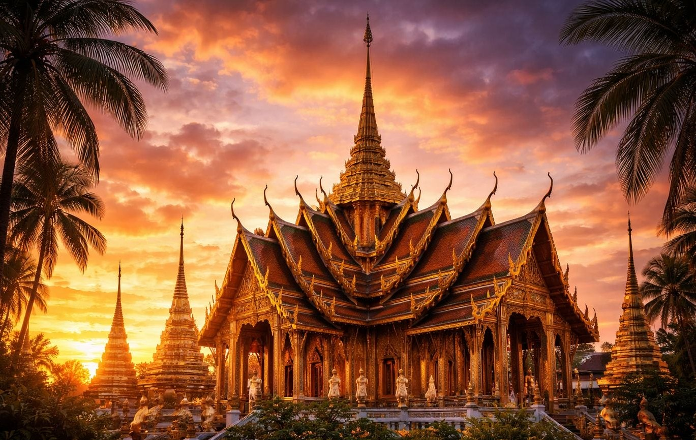

In-Depth • Food & Festivals • This Month
Wax, Faith and Fire: Ubon's Candle Festival Returns, July 28–30
Published 7 July 2026 • 8 min read

Three weeks from now, on the night of the full moon, the streets of Ubon Ratchathani will fill with dragons made of wax. Naga serpents the length of buses, celestial dancers with candlelit faces, entire episodes of the Buddha's life carved in beeswax to a polish that looks like amber — all of it rolling slowly through the Isan night on floats pulled by teams in silk, to the sound of molam pipes and long drums. The Ubon Ratchathani Candle Festival, the greatest spectacle in Thailand's Northeast, runs this year from 28 to 30 July, with the grand processions on the 29th and 30th around Thung Si Mueang park.
If you have ever wanted a reason to see Isan at its proudest, this is the one.
Why candles, and why now
The festival marks two of the holiest days in the Thai Buddhist calendar. Asahna Bucha (this year, 29 July) commemorates the Buddha's first sermon; the following day, Wan Khao Phansa, begins the three-month "Buddhist Lent," when monks stay put in their monasteries for the rainy season to study and meditate. For centuries, laypeople have marked the retreat's start by donating candles to temples — originally a practical gift, so monks could read scripture through the long wet nights.
Ubon's genius, more than a century ago, was to turn that humble offering into an art form. Villages and temples began competing to present the most beautiful candle, and the candles grew — first into carved pillars, then into the massive sculptural floats of today, some involving months of work and several tonnes of wax.
The artisans of the wax
In the weeks before the festival, temple courtyards across Ubon province become open-air studios, and visiting them is half the experience. The craft has two schools, fiercely and cheerfully partisan. The carving school works like sculptors, chiselling figures from solid blocks of wax. The appliqué school works like jewellers: paper-thin sheets of wax are pressed into intricate moulds — flame patterns, lotus petals, naga scales — then layered onto the float piece by piece, tens of thousands of pieces per candle.
"People ask how we can spend two months on something that exists for two days. But the candle is not the point. The making is the merit." — a master carver at Wat Phra That Nong Bua, quoted in local press ahead of a previous festival
Masters pass the techniques to school groups and village teams, which is why a festival this elaborate has never needed to professionalise: it is still, at heart, neighbourhoods making offerings — just at a scale that stops traffic.
The quiet night before the loud one
Don't skip the eve of Asahna Bucha. As dusk falls on the 29th, temples across the city hold wian tian: worshippers circle the ordination hall three times, clockwise, carrying a lit candle, incense and a lotus — one circuit each for the Buddha, his teaching and the monastic community. After the parade's drums and crowds, the sight of a few hundred candle flames drifting slowly around a darkened temple is the festival's other face, and for many visitors the one that stays with them.
Seeing it well
Ubon is an easy trip: an hour's flight from Bangkok or a sleeper train into the heart of Isan. Book accommodation now — festival week fills the city — and consider guesthouses a soi or two back from Thung Si Mueang, where prices stay sensible; ThaiHolidayBudget will confirm that Isan remains the best-value corner of the kingdom even in festival week. Arrive on the 28th to watch the candles gathered and judged in the park, stake out shade on Upparat Road for the daytime procession, and stay for the illuminated night parade. Dress modestly for temple visits, ask before photographing worshippers, and if a grandmother hands you sticky rice from her picnic basket — and in Ubon, one will — you know what to do.
Planning a wider Isan loop around it? Khon Kaen, Kalasin's dinosaur country and the Mekong towns of Khong Chiam all chain naturally onto Ubon — ThaiTripPlanner can help you rough out the route, and a head start on the script at ThaiLetters will let you read the temple names by the time you arrive.
Two days of fire, two months of wax, a century of practice, and a whole region's pride rolling through the streets at walking pace. Mark the dates: 28–30 July, Ubon Ratchathani.